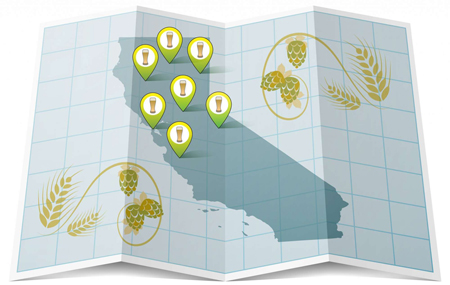

<div class="divider"></div>

<div class="credits">

  <div class="entry"><div>Interactive Producer: </div>Emma O'Neill  &bull; <a href="mailto:eoneill@sfchronicle.com">eoneill@sfchronicle.com</a>   &bull; <a href = "https://twitter.com/emmaruthoneill" target="_blank">@emmaruthoneill</a></div>

  <div class="entry"><div>Editor: </div>Paolo Lucchesi  &bull; <a href="mailto:plucchesi@sfchronicle.com">plucchesi@sfchronicle.com</a>  &bull; <a href = "https://twitter.com/lucchesi" target="_blank">@lucchesi</a></div>

  <div class="entry"><div>Illustrator: </div>Chris Fong  &bull; <a href="mailto:cfong@sfchronicle.com">cfong@sfchronicle.com</a></div>

  <div class="entry"><div>Digital Producers: </div>Kimberly Chua  &bull; <a href="mailto:kchua@sfchronicle.com">kchua@sfchronicle.com</a>  &bull; <a href = "https://twitter.com/kimberlyachua" target="_blank">@KimberlyAChua</a>
  <div>Lucio Villa  &bull; <a href="mailto:lvilla@sfchronicle.com">lvilla@sfchronicle.com</a>  &bull; <a href = "https://twitter.com/luciovilla" target="_blank">@luciovilla</a></div>
  </div>

  <div class="entry bold">Spy any new or unusual seasonal produce at your local farmers’ market? <div><a href="mailto:sfritsche@sfchronicle.com">Let us know.</a></div></div>

</div>

<div class="divider"></div>
<div class="dont-miss-head">Explore the Bay Area culinary scene:</div>

<div class="dont-miss">
  <div class="story">
    <div class="padded">
    <a href="https://projects.sfchronicle.com/2017/brewery-map/" target="_blank">
      </img>
    </a>
      <div class="small">The Ultimate NorCal Brewery Map</div>
    </div>
  </div>
  <div class="story">
    <div class="padded">
    <a href="https://projects.sfchronicle.com/2016/top-100-restaurants/" target="_blank">
      </img>
    </a>
      <div class="small">Top 100 Restaurants 2017</div>
    </div>
  </div>
  <div class="story">
    <div class="padded">
    <a href="https://projects.sfchronicle.com/2018/bay-area-chinese-cuisine/" target="_blank">
      </img>
    </a>
      <div class="small">Many Chinas, Many Tables</div>
    </div>
  </div>
</div>
